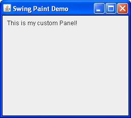

Lección: Realización de Pintado Personalizado
Creando la Aplicación Demo (Paso 2)
A continuación, agregaremos una superficie personaliza de dibujo al marco. Para esto crearemos una subclase de
javax.swing.JPanel (un contenedor ligero genérico) el cual suplirá el código para representar
nuestro pintado personalizado.

Una Subclase de javax.swing.JPanel
Pulse el botón Lanzar para ejecutar SwingPaintDemo2 usando Java™ Web Start ( descargue KDJ 7 o posterior). Alternativamente, para compilar y ejecutar el ejemplo por sí mismo, consulte el índice de ejemplos.
package painting;
import javax.swing.SwingUtilities;
import javax.swing.JFrame;
import javax.swing.JPanel;
import javax.swing.BorderFactory;
import java.awt.Color;
import java.awt.Dimension;
import java.awt.Graphics;
public class SwingPaintDemo2 {
public static void main(String[] args) {
SwingUtilities.invokeLater(new Runnable() {
public void run() {
createAndShowGUI();
}
});
}
private static void createAndShowGUI() {
System.out.println("Created GUI on EDT? "+
SwingUtilities.isEventDispatchThread());
JFrame f = new JFrame("Swing Paint Demo");
f.setDefaultCloseOperation(JFrame.EXIT_ON_CLOSE);
f.add(new MyPanel());
f.pack();
f.setVisible(true);
}
}
class MyPanel extends JPanel {
public MyPanel() {
setBorder(BorderFactory.createLineBorder(Color.black));
}
public Dimension getPreferredSize() {
return new Dimension(250,200);
}
public void paintComponent(Graphics g) {
super.paintComponent(g);
// Draw Text
g.drawString("This is my custom Panel!",10,20);
}
}
El primer cambio que notará es que ahora importamos una cantidad de clases adicionales, tales como
JPanel, Color, y Graphics. Ya que algunas de las clases AWT más viejas
se siguen usando en las aplicaciones modernas de Swing, es normal ver el paquete java.awt en unas
pocas sentencias de importación. También hemos definido una subclase personalizada de JPanel,
llamada MyPanel, que comprende la mayor parte del código nuevo.
La definición de la clase MyPanel tiene un constructor que establece un borde negro alrededor de
sus límites. Esto es un detalle sutil que podría ser difícil de ver al principio (si lo es, simplemente comente
la invocación de setBorder y entonces recompile). MyPanel también sobreescribe
getPreferredSize, el cual devuelve el ancho y alto deseado del panel (en este caso 250 es el
ancho, 200 es el alto). A causa de esto, la clase SwingPaintDemo no necesita más especificar el
tamaño del marco en pixels. Simplemente agrega el panel al marco y entonces invoca pack.
El método paintComponent es donde tiene lugar todo su pintado personalizado. Este método es
definido por javax.swing.JComponent y entonces es sobreescrito por sus subclases para proporcionar
su comportamiento personalizado. Su único parámetro, un objeto
java.awt.Graphics, expone un número de métodos para dibujar formas en 2D y obtener
información sobre el entorno de gráficos de la aplicación. En la mayoría de los casos el objeto que es
realmente recibido por este método será una instancia de
java.awt.Graphics2D (una subclase de Graphics), la cual proporciona soporte
para la representación de gráficos 2D sofisticados.
La mayoría de los componentes estándar de Swing tienen su apariencia implementada por objetos
"UI Delegate" separados. La invocación de super.paintComponent (g) transfiere el
contexto gráfico al delegado de la IU del componente, que pinta el fondo del panel. Para una mirada más atenta
de este proceso, vea la sección titulada "Painting and the UI Delegate" en el artículo de SDN
mencionado anteriormente.
Ejercicios:
- Ahora que ha dibujado algo de texto personalizado a la pantalla, intente minimizar y restaura la aplicación como hizo antes.
-
Tape una parte del texto con otra ventana, después mueva la ventana a otro sitio para volver a exponer el
texto personalizado. En ambos casos, el subsistema de pintado determinará que el componente está dañado y
se asegurará que su método
paintComponentsea invocado.